Source & review coverageمنبع و پوشش مرور
Main text, appendices, figure and table source pages, and biblio graphy reviewed. Figure/table images retain exact original values. Only explicitly printed numerical results are trans cr i bed; plotted curves are not digitized. Project-role recommendations are separate reviewer judgments.متن، پیوستها، صفحات شکل و جدول و کتابنامه مرور شدهاند. تصاویر منبع مقادیر اصلی را حفظ میکنند. فقط اعداد صریح چاپشده ثبت و منحنیها تخمین زده نشدهاند. پیشنهاد نقش در پروژه، قضاوت مستقل مرورگر است.
Research problem and scopeمسئله و دامنه
El Makroum, Zwickl-Bernhard and Kranzl, Results in Engineering 29 (2026),109857. The study asks whether open-source LLMs can orchestrate residential appliance scheduling from natural language through tool use. It evaluates scheduling optimality, multi-appliance coordination and analytical-query handling; no numbered formal hypotheses are stated.El Makroum و همکاران،۲۰۲۶. امکان هماهنگسازی زمانبندی وسایل از زبان طبیعی با ابزار و مدل باز بررسی میشود. بهینگی، هماهنگی چندوسیلهای و پرسش تحلیلی ارزیابی میشوند؛ فرضیه رسمی شمارهدار ندارد. Source · PDF p. 1Source · PDF p. 5
Orchestrator, specialists and numerical toolهماهنگگر، متخصصها و ابزار عددی
One ReAct orchestrator uses six tools: electricity prices, EV calendar constraints, window sums, specialist delegation, scheduling and finish. Three single-turn specialist agents cover washing machine, dishwasher and EV. Deterministic exhaustive window-sum analysis evaluates 96 fifteen-minute price slots; an LLM selects/communica tes structured recommendations. No few-shot demonstrations or fine-tuning are used.یک هماهنگگر ReAct شش ابزار قیمت، تقویم EV، مجموع پنجره، واگذاری، زمانبندی و پایان دارد. سه متخصص تکنوبتی لباسشویی، ظرفشویی و EV را پوشش میدهند. ابزار قطعی پنجره قیمت۹۶گام پانزدهدقیقهای را بررسی و مدل پیشنهاد ساختاریافته ارائه میکند. مثال کمنمونه و تنظیم دقیق استفاده نشده است. Source · PDF p. 4Source · PDF p. 5
ENTSO-E live Austrian prices and Google Calendar title/time fields enter the workflow. The calendar demonstration uses weekday working hours 08:00–18:00. Appliance power/durations are 2 kW/120 min,1.8 kW/90 min,7.4 kW/360 min. schedule_appliance validates indices and emits a 96-element binary schedule. Appendix B gives the MILP benchmark formulation; Git Hub code and prompts are reported available.قیمت زنده اتریش ENTSO-E و عنوان/زمان Google Calendar ورودیاند؛ مثال تقویم روزکاری۸تا۱۸ است. توان/مدت وسایل۲کیلووات/۱۲۰دقیقه،۱٫۸/۹۰ و۷٫۴/۳۶۰ است. ابزار زمانبندی آرایه دودویی۹۶تایی میسازد. MILP در پیوست B و کد/پرامپت در GitHub گزارش شدهاند. Source · PDF p. 4Source · PDF p. 5Source · PDF p. 12Source · PDF p. 14
Models, trials and comparisonsمدلها، اجراها و مقایسه
Llama-3.3-70 B, Qwen-3-32 B, GPT-OSS-120 B use temperature 0 with five runs per scenario/model. All 75 runs occur on 14 October 2025 for next-day prices:15 single-appliance,15 multi-appliance and 45 analytical queries across baseline/minimal-guidance/explicit-workflow prompts. MILP supplies optimal start-time reference.سه مدل Llama-3.3-70B،Qwen-3-32B وGPT-OSS-120B با دمای صفر و پنج اجرا در هر سناریو/مدل آزموده شدهاند.۷۵اجرا در۱۴اکتبر۲۰۲۵ شامل۱۵تکوسیله،۱۵چندوسیله و۴۵پرسش تحلیلی در سه سطح راهنماست. MILP مرجع زمان بهینه است. Source · PDF p. 5
Optimality, coordination and overheadبهینگی، هماهنگی و سربار
All models are 5/5 optimal for washing machine only. For three appliances Llama succeeds 5/5 with all appliances optimal,9 iterations,32883 tokens and 14.7 s. Qwen schedules all three 1/5; in that run EV is not optimal. GPT-OSS succeeds 0/5 and generally stops after washing machine. Qwen metrics 31.4 s/35401 tokens are conditional on its one completed run; GPT-OSS metrics are from four partial runs.همه مدلها در لباسشویی۵/۵بهینهاند. Llama در سه وسیله۵/۵،۹تکرار،۳۲۸۸۳توکن و۱۴٫۷ثانیه دارد. Qwen فقط۱/۵هر سه را زمانبندی میکند و EV همان اجرا بهینه نیست. GPT-OSS صفر/۵است. زمان۳۱٫۴ثانیه Qwen فقط مربوط به اجرای کامل آن و آمار GPT مربوط به اجراهای ناقص است. Source · PDF p. 5Source · PDF p. 6
Analytical price queries require explicit workflow guidance for consistent tool selection. The paper reports infrastructure dependence on high-throughput inference and discusses the energy/token overhead of LLM coordination. This demonstrates tool orchestration on a small scheduling task, not direct solution of thermally coupled HVAC control.پرسش تحلیلی قیمت برای انتخاب ابزار پایدار به راهنمای صریح گردشکار نیاز دارد. وابستگی به استنتاج سریع و سربار انرژی/توکن مطرح است. نتیجه، هماهنگی ابزار در زمانبندی کوچک است و کنترل حرارتی بههمپیوسته را اثبات نمیکند. Source · PDF p. 10Source · PDF p. 11Source · PDF p. 12
Author-stated limitations and future workمحدودیتها و آینده نویسندگان
Only three appliance types, one household/day and 75 trials; no thermal loads, adaptive learning or long-term field validation. Calendar and cheapest-price windows did not conflict, so deadline–cost tradeoffs were not tested. Security testing used synthetic development inputs; physical device safeguards and independent red-teaming remain necessary. Authors propose hybrid optimization, broader markets/seasons and longitudinal pilots.سه وسیله، یک خانه/روز و۷۵اجرا؛ بار حرارتی، یادگیری تطبیقی و اعتبارسنجی بلندمدت ندارد. تقویم و پنجره کمهزینه تعارض نداشتند و مصالحه مهلت/هزینه آزموده نشد. امنیت فقط ورودی مصنوعی توسعه است؛ ایمنی دستگاه و تیم قرمز مستقل لازم است. روش ترکیبی و آزمون گسترده آیندهاند. Source · PDF p. 11Source · PDF p. 12
Key reported resultsنتایج کلیدی گزارششده
Single appliance:100% all models. Three appliances: Llama 100%, Qwen 20%, GPT-OSS 0% scheduling completion.تکوسیله:۱۰۰٪همه؛ تکمیل سه وسیله:Llama۱۰۰٪،Qwen۲۰٪،GPT-OSSصفر٪. Source · PDF p. 5Source · PDF p. 6
Figures, captions & extracted evidenceشکلها، عنوانها و شواهد استخراجشده
Figure 1
Mechanism & workflowسازوکار و گردش کار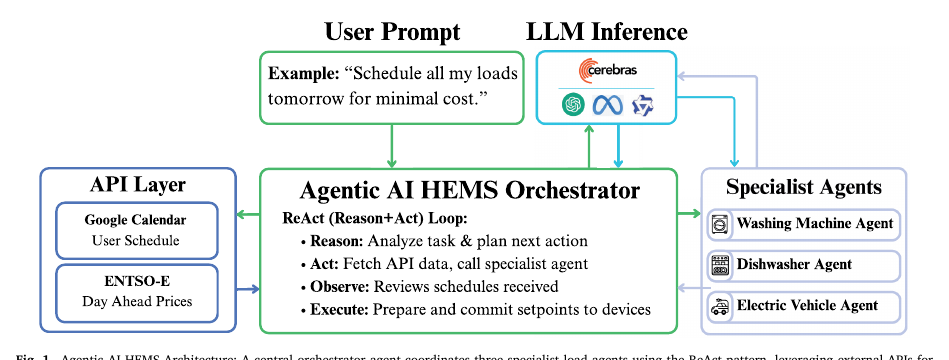
How to read this figureراهنمای خواندن شکل
Trace the inputs, processing stages and outputs, then look for feedback or validation paths. Use the accompanying explanation to distinguish the proposed design from components actually tested in the paper.ورودی، مرحله پردازش و خروجی را دنبال و مسیر بازخورد یا اعتبارسنجی را پیدا کنید. با توضیح همراه، طراحی پیشنهادی را از مؤلفه واقعاً آزمودهشده جدا کنید.
Reader guidance · not an additional author claimراهنمای مطالعه · ادعای اضافی نویسنده نیستWhat this figure showsاین شکل چه نشان میدهد؟
The central ReAct orchestrator delegates to three single-turn load specialists and external tools.هماهنگگرReActبه سه متخصص تکنوبتی وابزاربیرونی واگذارمیکند.
Reported values & evidence limitsمقادیر گزارششده و حدود شواهد
Six orchestrator tools serve three appliances. Numerical window search is deterministic.شش ابزار وسه وسیله؛جستوجوی عددی پنجره قطعی است.
Figure 2
Source visualتصویر منبع
How to read this figureراهنمای خواندن شکل
Read the original labels and caption first, then use the explanation and evidence note below. Printed quantities are preserved separately from reviewer interpretation.ابتدا برچسبها و عنوان اصلی را بخوانید و سپس توضیح و یادداشت شاهد را بررسی کنید. مقدار چاپشده از تفسیر مرورگر جدا نگه داشته شده است.
Reader guidance · not an additional author claimراهنمای مطالعه · ادعای اضافی نویسنده نیستWhat this figure showsاین شکل چه نشان میدهد؟
MILP-optimal next-day schedules align the three appliances with Austrian prices.برنامهبهینهMILPسه وسیله راباقیمت اتریش همترازمیکند.
Reported values & evidence limitsمقادیر گزارششده و حدود شواهد
EV starts at 00:15, washing machine at 02:30 and dishwasher at 02:45; the expensive window is 06:30–09:30 on 15 October 2025.شروعEV۰۰:۱۵،لباسشویی۰۲:۳۰،ظرفشویی۰۲:۴۵؛پنجره گران۰۶:۳۰–۰۹:۳۰.
Figure 3
Comparison & resultsمقایسه و نتایج
How to read this figureراهنمای خواندن شکل
Check the axes, units, panel labels and the caption’s definition of better performance. Compare methods under the stated conditions; keep uncertainty, tradeoffs and normalization separate from headline gains.محور، واحد، پنل و تعریف عملکرد بهتر در عنوان را بررسی کنید. روشها را در شرایط بیانشده مقایسه و عدمقطعیت، مصالحه و نرمالسازی را از بهبود شاخص اصلی جدا نگه دارید.
Reader guidance · not an additional author claimراهنمای مطالعه · ادعای اضافی نویسنده نیستWhat this figure showsاین شکل چه نشان میدهد؟
Tokens, execution time and iterations compare single- and multi-appliance coordination.توکن،زمان وتکرار،هماهنگی تکوچندوسیله رامقایسه میکند.
Reported values & evidence limitsمقادیر گزارششده و حدود شواهد
Llama uses 13,122 tokens / 4.8 s for one appliance and 32,883 tokens / 14.7 s for three. Other models use conditional run denominators in Table 4.Llamaتک۱۳۱۲۲توکن/۴٫۸ثانیه؛چند۳۲۸۸۳/۱۴٫۷؛مخرجسایرمدلهامشروطاست.
Figure 4
Mechanism & workflowسازوکار و گردش کار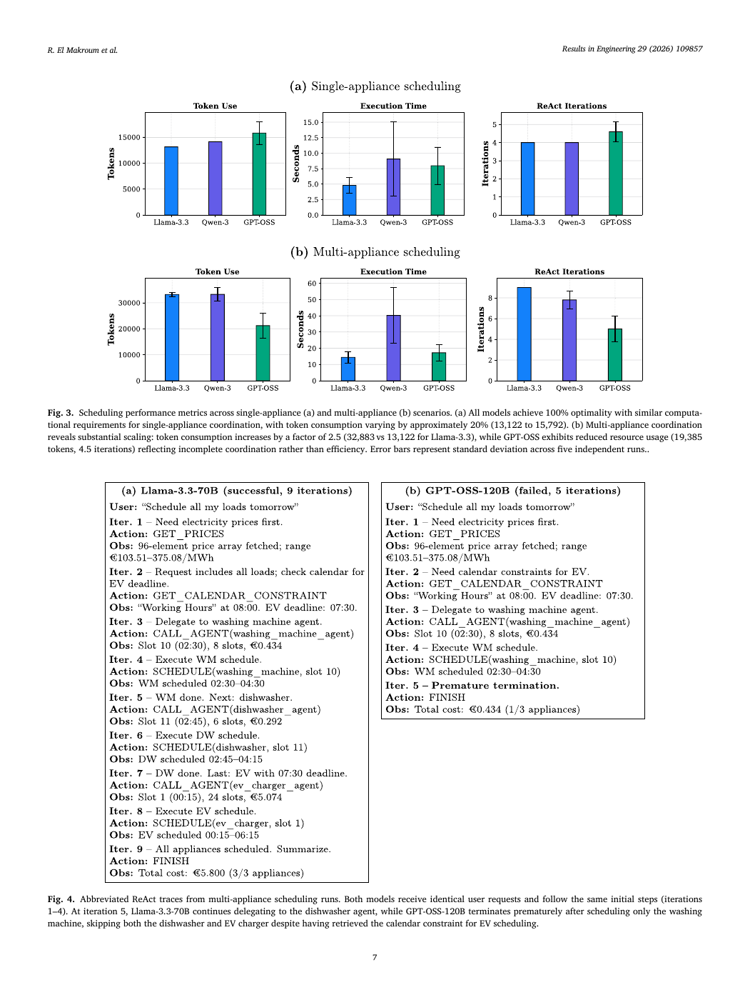
How to read this figureراهنمای خواندن شکل
Trace the inputs, processing stages and outputs, then look for feedback or validation paths. Use the accompanying explanation to distinguish the proposed design from components actually tested in the paper.ورودی، مرحله پردازش و خروجی را دنبال و مسیر بازخورد یا اعتبارسنجی را پیدا کنید. با توضیح همراه، طراحی پیشنهادی را از مؤلفه واقعاً آزمودهشده جدا کنید.
Reader guidance · not an additional author claimراهنمای مطالعه · ادعای اضافی نویسنده نیستWhat this figure showsاین شکل چه نشان میدهد؟
ReAct traces contrast successful Llama orchestration and failed GPT-OSS coordination for the same request.ردReActهماهنگی موفقLlamaوشکستGPT-OSSرابرایدرخواستیکسانمقایسه میکند.
Reported values & evidence limitsمقادیر گزارششده و حدود شواهد
These are example delegation and termination traces, not aggregate success rates.رد،مثالواگذاری/پایان است،نه نرخموفقیتتجمیعی.
Figure 5
Comparison & resultsمقایسه و نتایج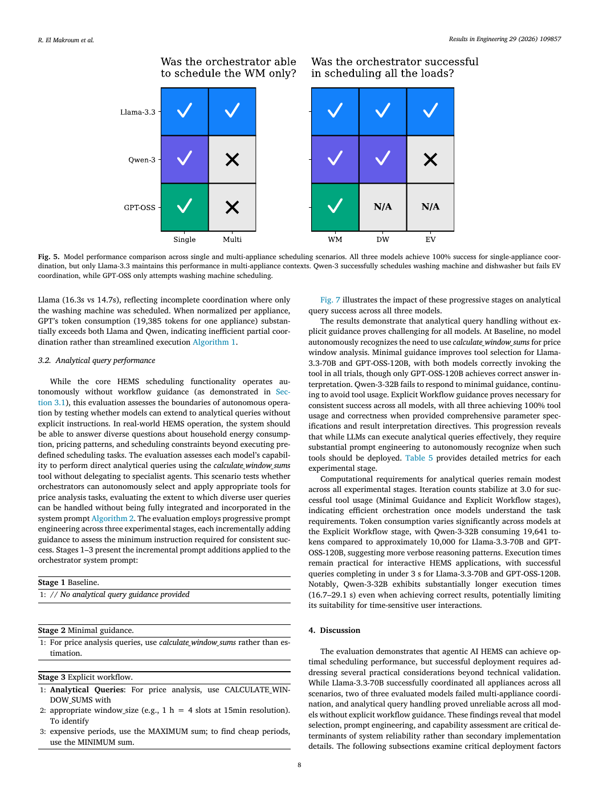
How to read this figureراهنمای خواندن شکل
Check the axes, units, panel labels and the caption’s definition of better performance. Compare methods under the stated conditions; keep uncertainty, tradeoffs and normalization separate from headline gains.محور، واحد، پنل و تعریف عملکرد بهتر در عنوان را بررسی کنید. روشها را در شرایط بیانشده مقایسه و عدمقطعیت، مصالحه و نرمالسازی را از بهبود شاخص اصلی جدا نگه دارید.
Reader guidance · not an additional author claimراهنمای مطالعه · ادعای اضافی نویسنده نیستWhat this figure showsاین شکل چه نشان میدهد؟
Success rates and per-appliance outcomes expose the multi-device coordination gap.موفقیتوخروجی هر وسیله شکافهماهنگی چندوسیله رانشان میدهد.
Reported values & evidence limitsمقادیر گزارششده و حدود شواهد
Single-appliance success is 100% for every model; multi-appliance completion is 100% for Llama, 20% for Qwen and 0% for GPT-OSS.تکوسیلههمه۱۰۰٪؛تکمیلچند:Llama۱۰۰٪،Qwen۲۰٪،GPTصفر٪.
Figure 6
Comparison & resultsمقایسه و نتایج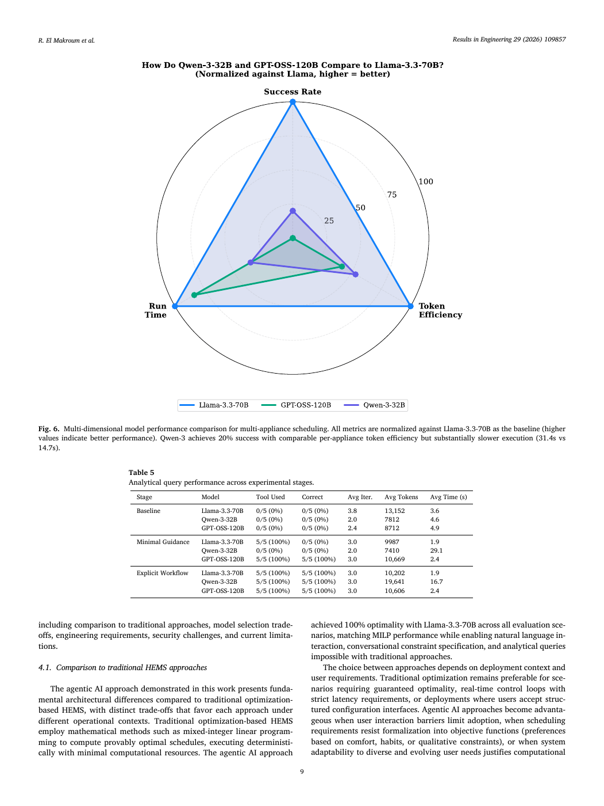
How to read this figureراهنمای خواندن شکل
Check the axes, units, panel labels and the caption’s definition of better performance. Compare methods under the stated conditions; keep uncertainty, tradeoffs and normalization separate from headline gains.محور، واحد، پنل و تعریف عملکرد بهتر در عنوان را بررسی کنید. روشها را در شرایط بیانشده مقایسه و عدمقطعیت، مصالحه و نرمالسازی را از بهبود شاخص اصلی جدا نگه دارید.
Reader guidance · not an additional author claimراهنمای مطالعه · ادعای اضافی نویسنده نیستWhat this figure showsاین شکل چه نشان میدهد؟
The radar compares normalized success, speed and resource efficiency against Llama.رادارموفقیت،سرعتوبازده منبعنرمالشدهنسبتبهLlamaرامقایسه میکند.
Reported values & evidence limitsمقادیر گزارششده و حدود شواهد
Normalized scores must be read with the partial-run denominators and original metrics in Table 4.امتیازنرمالنباید میانگیناجرایناقصراپنهانکند؛مخرجاصلیجدول۴است.
Figure 7
Interface / study settingرابط یا بستر مطالعه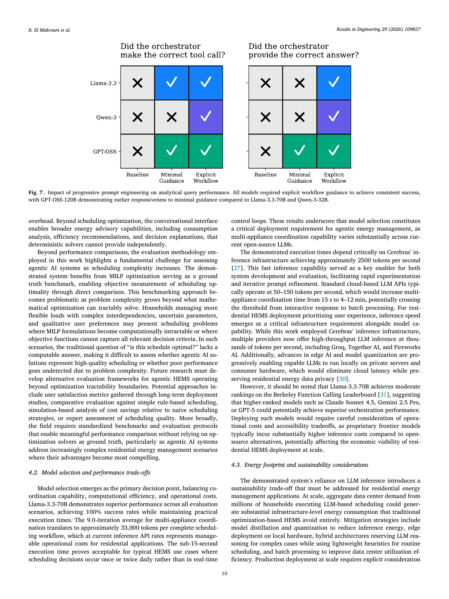
How to read this figureراهنمای خواندن شکل
Identify the inputs, outputs or physical setting visible in the original. Use the caption to distinguish an illustrative screen or setup from a measured experimental result.ورودی، خروجی یا بستر فیزیکی نمایشدادهشده را مشخص کنید. با عنوان شکل، تصویر نمونه رابط یا تجهیزات را از نتیجه آزمایش اندازهگیریشده جدا کنید.
Reader guidance · not an additional author claimراهنمای مطالعه · ادعای اضافی نویسنده نیستWhat this figure showsاین شکل چه نشان میدهد؟
Progressive prompts test analytical-query tool selection with no, minimal and explicit guidance.پرامپت تدریجی انتخابابزارپرسشتحلیلی رابدون/باراهنمایکم/صریحمیسنجد.
Reported values & evidence limitsمقادیر گزارششده و حدود شواهد
There are 45 analytical trials across three prompt stages. Authors report explicit workflow guidance is needed for consistent performance.۴۵آزمونتحلیلی درسهمرحله؛متننیازبهراهنمایصریحرابرایپایداریگزارشمیکند.
Figure A.1
Interface / study settingرابط یا بستر مطالعه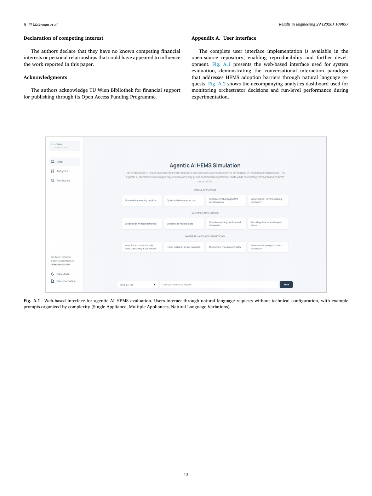
How to read this figureراهنمای خواندن شکل
Identify the inputs, outputs or physical setting visible in the original. Use the caption to distinguish an illustrative screen or setup from a measured experimental result.ورودی، خروجی یا بستر فیزیکی نمایشدادهشده را مشخص کنید. با عنوان شکل، تصویر نمونه رابط یا تجهیزات را از نتیجه آزمایش اندازهگیریشده جدا کنید.
Reader guidance · not an additional author claimراهنمای مطالعه · ادعای اضافی نویسنده نیستWhat this figure showsاین شکل چه نشان میدهد؟
The web interface accepts natural-language scheduling requests and shows example interactions.رابطوبدرخواستزمانبندی زبانی ومثال تعاملرانشان میدهد.
Reported values & evidence limitsمقادیر گزارششده و حدود شواهد
This is a user-interface example, not a user-acceptance study.مثالرابطاست،نه مطالعهپذیرشکاربر.
Figure A.2
Interface / study settingرابط یا بستر مطالعه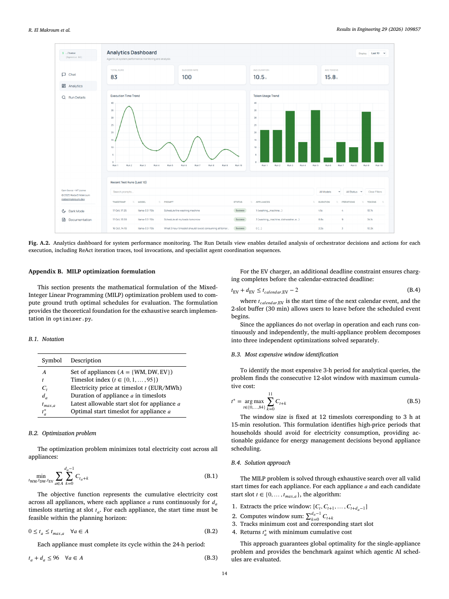
How to read this figureراهنمای خواندن شکل
Identify the inputs, outputs or physical setting visible in the original. Use the caption to distinguish an illustrative screen or setup from a measured experimental result.ورودی، خروجی یا بستر فیزیکی نمایشدادهشده را مشخص کنید. با عنوان شکل، تصویر نمونه رابط یا تجهیزات را از نتیجه آزمایش اندازهگیریشده جدا کنید.
Reader guidance · not an additional author claimراهنمای مطالعه · ادعای اضافی نویسنده نیستWhat this figure showsاین شکل چه نشان میدهد؟
The analytics dashboard exposes run-level orchestrator actions and resource use.داشبوردتحلیل،کنشو مصرفمنبعهر اجرایهماهنگگررا آشکارمیکند.
Reported values & evidence limitsمقادیر گزارششده و حدود شواهد
Run details support auditing; this interface adds no new experimental trials.نمایاجرایجزئیممیزیراپشتیبانی میکند؛آزمایشجدیدنیست.
Tables & numerical evidenceجدولها و شواهد عددی
Table 1 · Summary of LLM-based energy system applications, outlining their key architectural distinctions. Ref Approach LLM Role Output Key Distinction Zhang et al. [15] EV charging DSM with RAG Generates optimization code forجدول1:دادهها ومقایسههای منبع
Table 1 provides: Summary of LLM-based energy system applications, outlining their key architectural distinctions. Ref Approach LLM Role Output Key Distinction Zhang et al. [15] EV charging DSM with RAG Generates optimization code for. Preserve the complete printed rows, units, conditions and footnotes in the source view; selected relevant numerical results are explained in this report.جدول1دادههای اصلی رابههمراه واحد،شرط وپانویس ارائه میکند؛اعدادمرتبط دربخش نتایج توضیح داده شدهاند وتمام سطرهادرنمایمنبع حفظ شدهاند.
Table 1 · PDF p. 3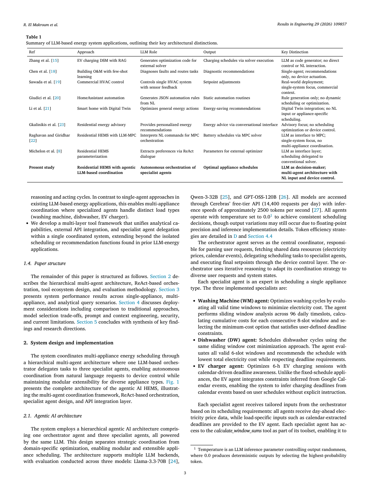
Table 2 · Appliance specifications for system evaluation. Appliance Power Rating (kW) Duration (minutes) Timeslots (15-min) Washing Machine (WM) 2.0 120 8جدول2:دادهها ومقایسههای منبع
Table 2 provides: Appliance specifications for system evaluation. Appliance Power Rating (kW) Duration (minutes) Timeslots (15-min) Washing Machine (WM) 2.0 120 8. Preserve the complete printed rows, units, conditions and footnotes in the source view; selected relevant numerical results are explained in this report.جدول2دادههای اصلی رابههمراه واحد،شرط وپانویس ارائه میکند؛اعدادمرتبط دربخش نتایج توضیح داده شدهاند وتمام سطرهادرنمایمنبع حفظ شدهاند.
Table 2 · PDF p. 5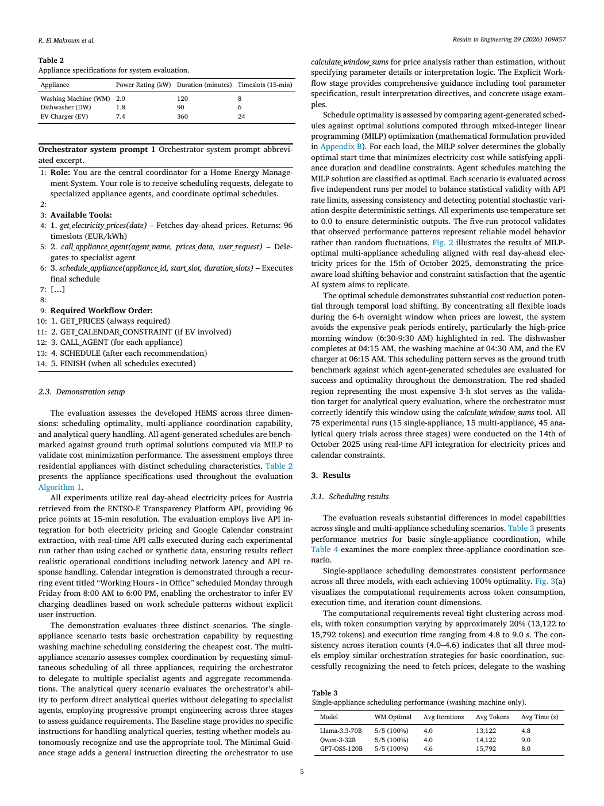
Table 4 · Three-appliance scheduling performanceعملکردزمانبندی سه وسیله
The original three-appliance scheduling performance are retained with all rows and units in the source view. The report discusses selected numerical comparisons in context.عملکردزمانبندی سه وسیلهبههمراه تمام سطرها وواحدها درصفحه اصلی حفظ شده است؛مقایسه عددی منتخب درگزارش توضیح داده میشود.
Table 4 · PDF p. 6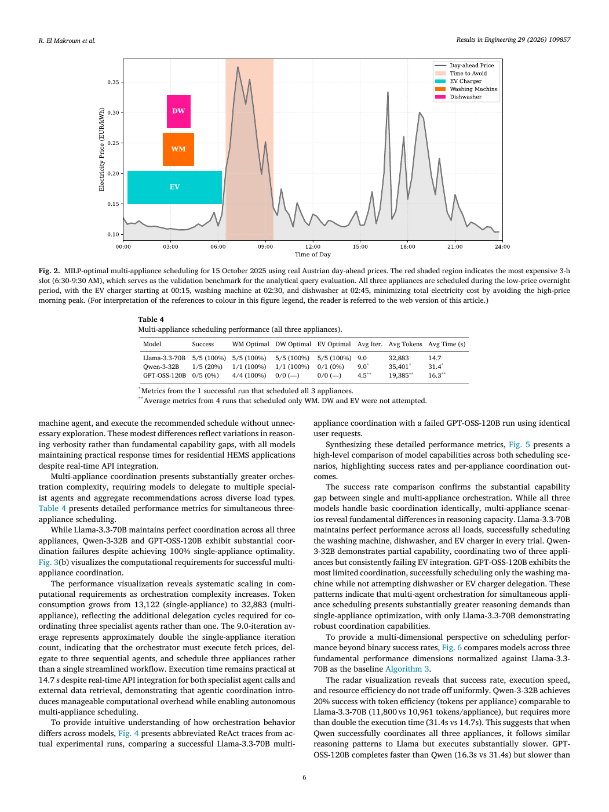
Table 3 · Single-appliance scheduling performance (washing machine only). Model WM Optimal Avg Iterations Avg Tokens Avg Time (s) Llama-3.3-70 B 5/5 (100%) 4.0 13,122 4.8جدول3:دادهها ومقایسههای منبع
Table 3 provides: Single-appliance scheduling performance (washing machine only). Model WM Optimal Avg Iterations Avg Tokens Avg Time (s) Llama-3.3-70 B 5/5 (100%) 4.0 13,122 4.8. Preserve the complete printed rows, units, conditions and footnotes in the source view; selected relevant numerical results are explained in this report.جدول3دادههای اصلی رابههمراه واحد،شرط وپانویس ارائه میکند؛اعدادمرتبط دربخش نتایج توضیح داده شدهاند وتمام سطرهادرنمایمنبع حفظ شدهاند.
Table 3 · PDF p. 5Table 5 · Analytical query performance across experimental stages. Stage Model Tool Used Correct Avg Iter. Avg Tokens Avg Time (s) Baseline Llama-3.3-70 B 0/5 (0%) 0/5 (0%) 3.8 13,152 3.6جدول5:دادهها ومقایسههای منبع
Table 5 provides: Analytical query performance across experimental stages. Stage Model Tool Used Correct Avg Iter. Avg Tokens Avg Time (s) Baseline Llama-3.3-70 B 0/5 (0%) 0/5 (0%) 3.8 13,152 3.6. Preserve the complete printed rows, units, conditions and footnotes in the source view; selected relevant numerical results are explained in this report.جدول5دادههای اصلی رابههمراه واحد،شرط وپانویس ارائه میکند؛اعدادمرتبط دربخش نتایج توضیح داده شدهاند وتمام سطرهادرنمایمنبع حفظ شدهاند.
Table 5 · PDF p. 9Critical analysis — reviewer assessmentتحلیل انتقادی — ارزیابی مرورگر
Reported optimality relies on an exhaustive numerical window tool. The experiment does not show unaided LLM numerical optimization. Five-run, one-day model success rates should not be generalized into universal model rankings.بهینگی به ابزار عددی جستوجوی کامل پنجره متکی است و بهینهسازی عددی مستقل مدل را نشان نمیدهد. رتبه مدل در پنج اجرا/یک روز عمومی نیست. Source · PDF p. 4Source · PDF p. 5Source · PDF p. 12
Role in our researchنقش مقاله در پژوهش ما
Why is it important to our research?چرا برای پژوهش ما مهم است؟
An executable hierarchical LLM-HEMS precedent for our topology/control comparison; it prevents claiming orchestration alone as novelty.پیشینه اجرایی HEMS سلسلهمراتبی برای مقایسه توپولوژی/کنترل ماست و نوآوری صرف هماهنگسازی را محدود میکند. Source · PDF p. 4Source · PDF p. 12
What does it contribute to our research?چه سهمی در پژوهش ما دارد؟
Concrete tool contracts, single-turn specialists, termination flow and per-run coordination/token/latency metrics.قرارداد ابزار، متخصص تکنوبتی، پایان گردشکار و معیار هماهنگی/توکن/تأخیر فراهم میکند. Source · PDF p. 4Source · PDF p. 6
How can we employ it?چگونه از آن استفاده کنیم؟
Reuse the orchestration pattern and structured schedules behind our safety gateway; align devices and forecasts to Alameda and instrument partial/failed runs. Do not assume an independent shiftable-load optimum solves coupled HVAC/battery/EV scheduling.الگوی هماهنگی و برنامه ساختاریافته پشت دروازه ایمنی اقتباس شود؛ دستگاه/پیشبینی با Alameda تطبیق و شکستهای جزئی ثبت شوند. بهینه مستقل بار انتقالپذیر را حلکننده HVAC/باتری/EV وابسته فرض نکنیم. Source · PDF p. 4Source · PDF p. 11
Should we implement it as a baseline?آیا باید آن را بهعنوان خطمبنا پیاده کنیم؟
High-priority adapted agentic scheduling baseline. Match common devices/task/evidence and keep MILP as numerical benchmark. Exact original three-appliance reproduction is optional and separate from our main causal contribution.خطمبنای اقتباسی زمانبندی عاملمحور با اولویت بالاست. وظیفه/دستگاه/شاهد مشترک و MILP مرجع باشد. بازتولید دقیق سه وسیله اختیاری و جدا از سهم علّی اصلی است. Source · PDF p. 5Source · PDF p. 12
Original source pagesصفحات اصلی منبع
PDF page 1
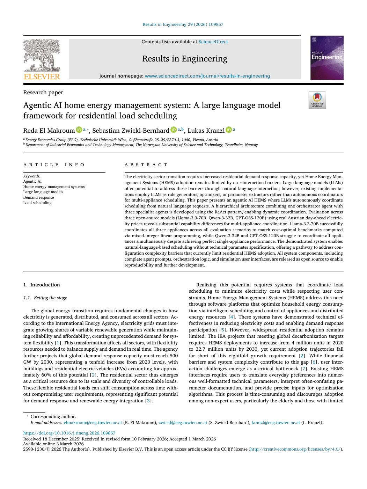
PDF page 2
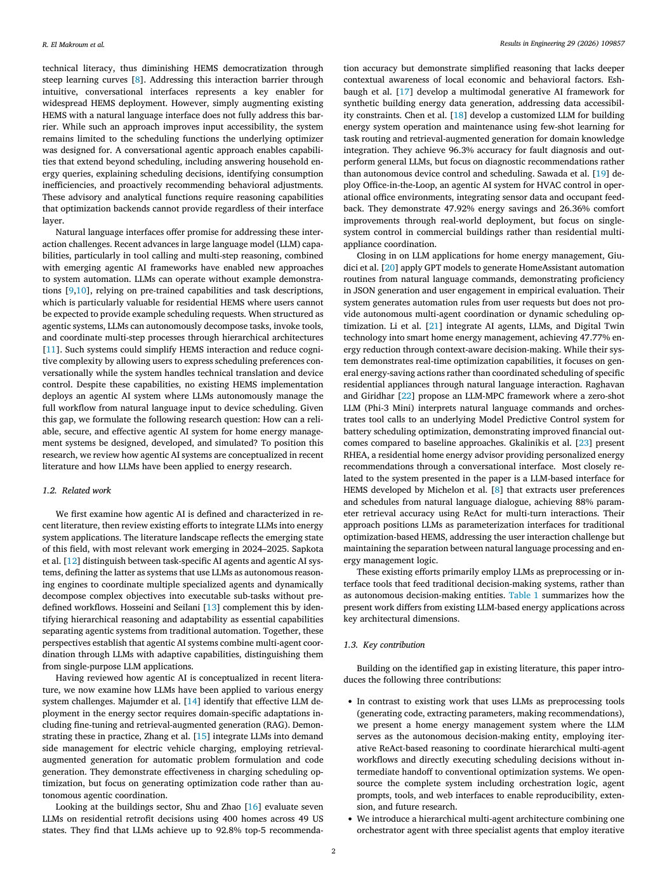
PDF page 4
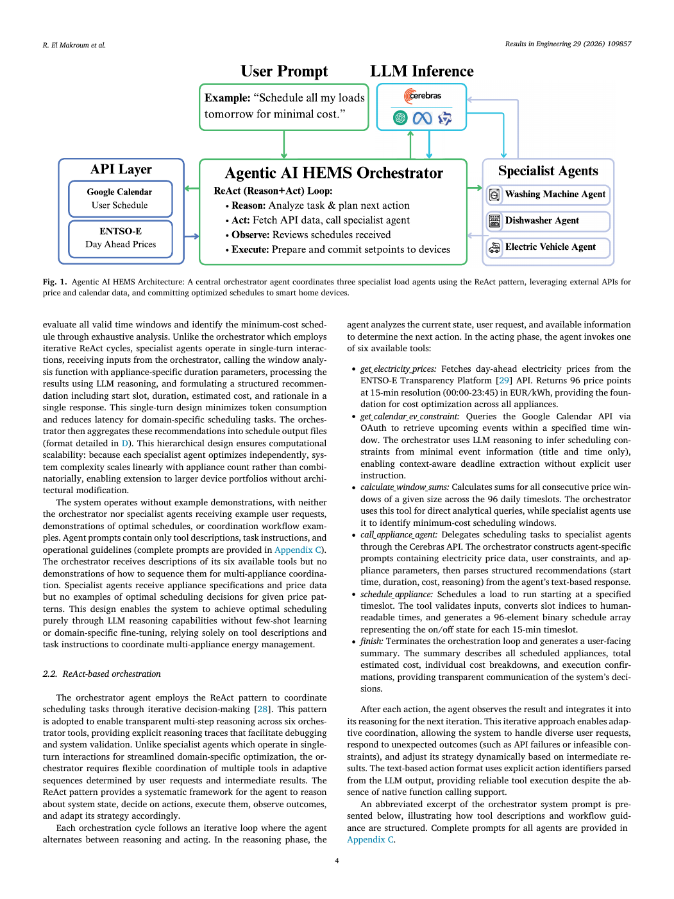
PDF page 11
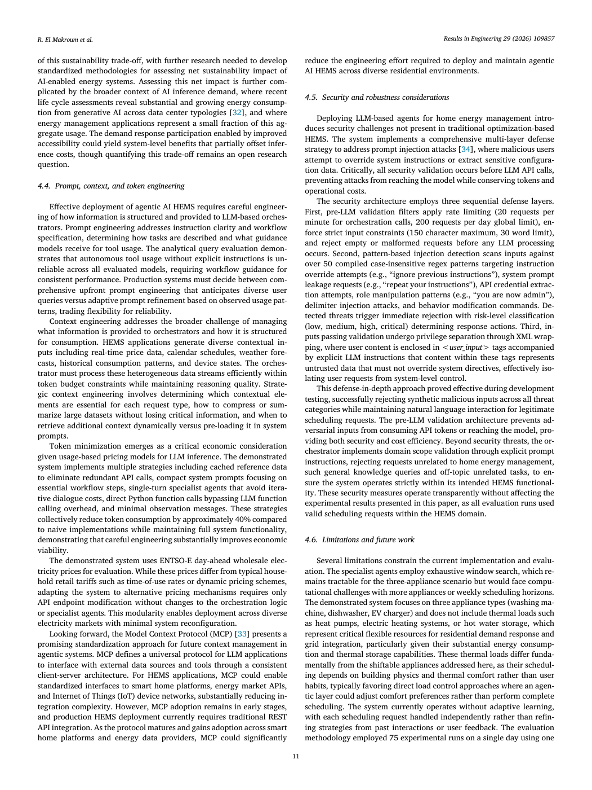
PDF page 12
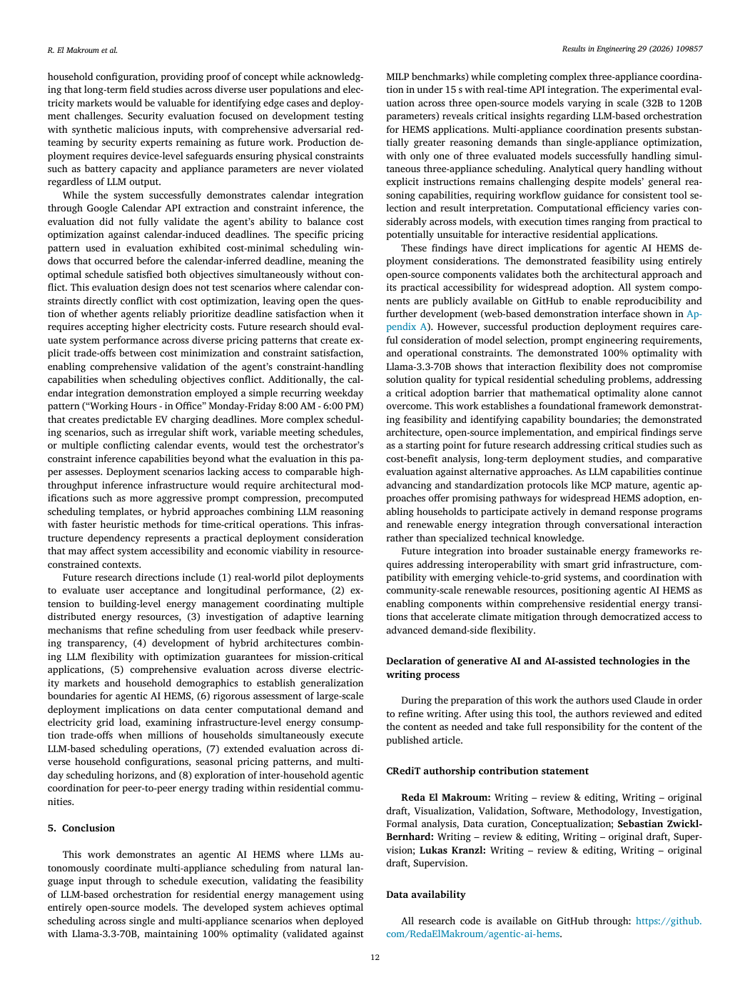
PDF page 15
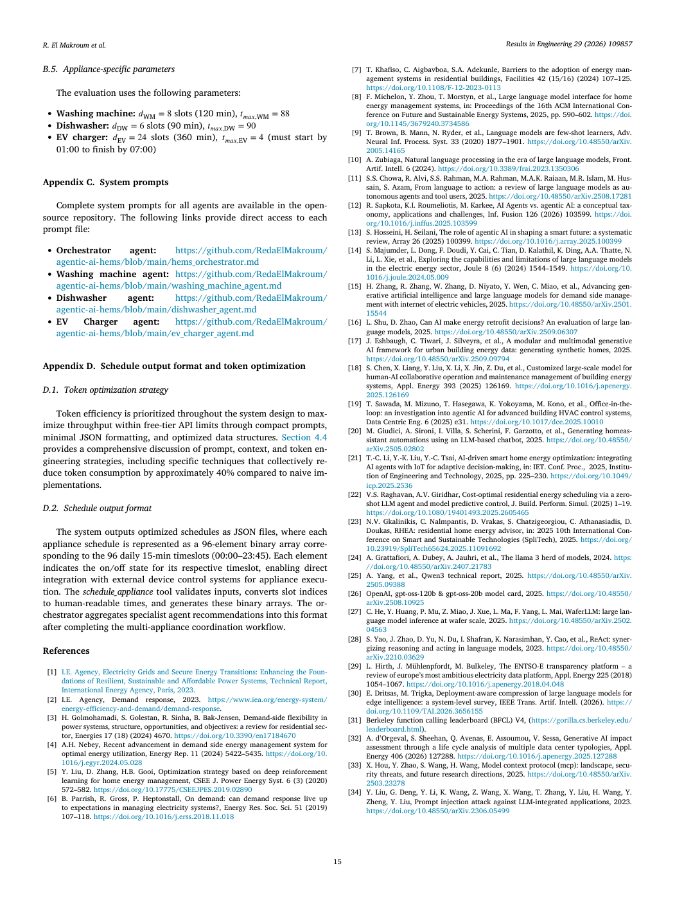
Full bibliographyکتابنامه کامل
Full bibliography transcribed from the source PDF. Original reference pages are the authority for formatting and extraction ambiguities; cited works were not independently analyzed just because they appear here.کتابنامه کامل از PDF منبع استخراج شده است. صفحه اصلی مرجع نگارش و ابهام استخراج است؛ درج منبع به معنی تحلیل مستقل آن اثر نیست.